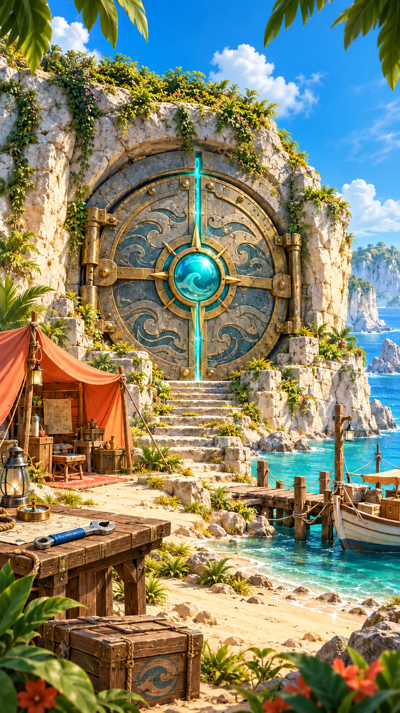
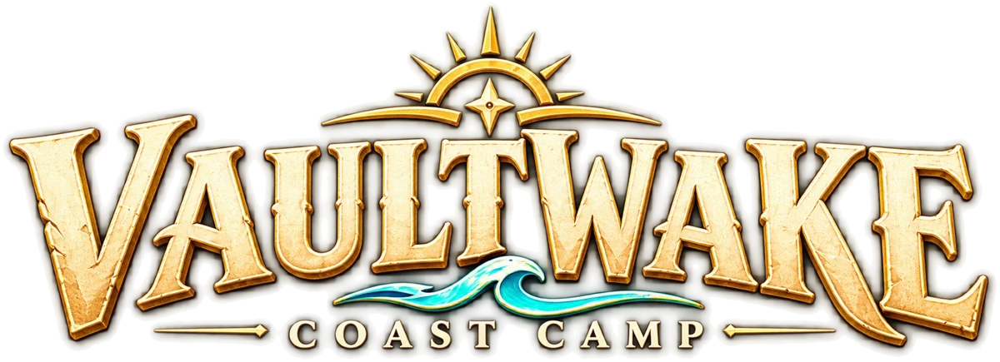

Loading the camp
Camps kept in this browser when a new camp was started or a save could not be read. Restoring one keeps your current camp here too.
A new way to play Vaultwake: crew orders earn coins, coins upgrade the coast.